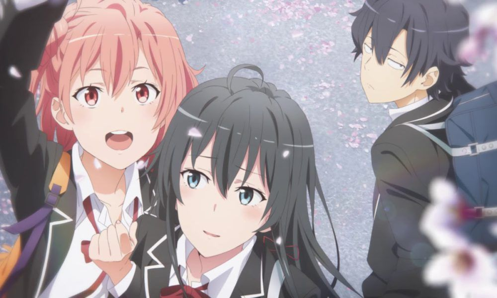
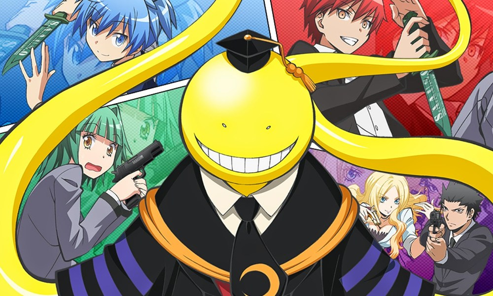
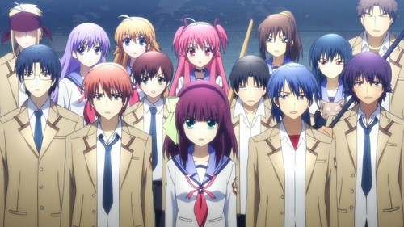
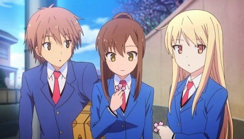
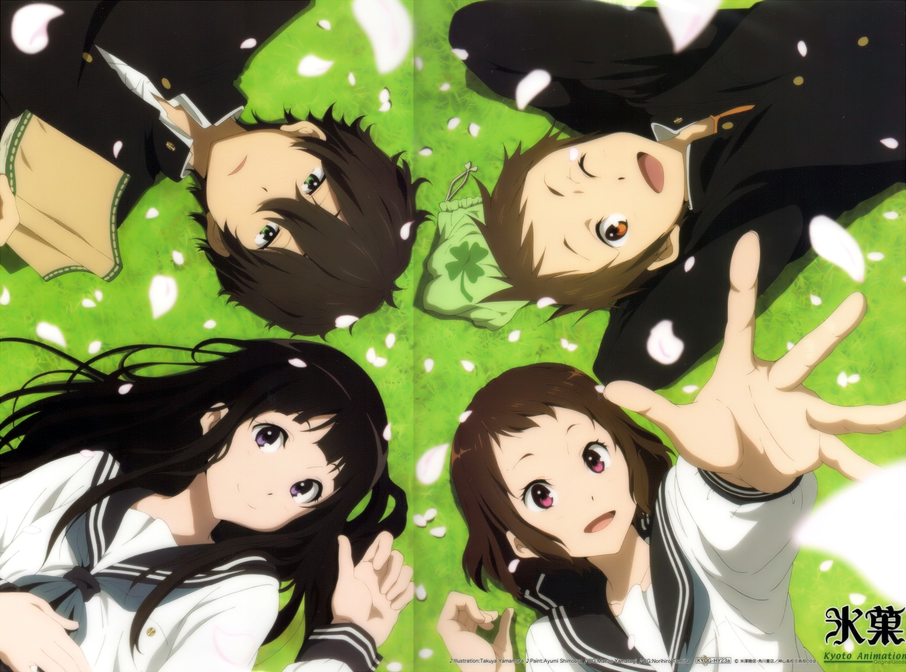

Los mejores animes del género vida escolar
YAHARI ORE NO SEISHUN LOVE COMEDY WA MACHIGATTEIRU
La historia trata sobre el Club de Servicio Voluntario y el protagonista principal es otro estudiante apático al que no le gusta socializar con otros. Todo cambia cuando se encuentra con el presidente de este club, Yukino Yukinoshita. Este es uno de los mejores animes de comedia romantica por sus buenos giros argumentales y sus nuevas heroinas participando en diferentes espacios de la historia de forma muy original
ANSATSU KYOUSHITSU
Esta serie sigue a Koro-sensei, que es la poderosa criatura parecida a un pulpo que destruye la Luna y amenaza con hacer lo mismo con la Tierra a menos que alguien de la clase 3-E de la escuela secundaria Kunugigaoka asesine El primero. Las cosas se vuelven aún más extrañas cuando esta criatura se convierte en la maestra de esta clase.
ANGEL BEATS!
transcurre en una escuela secundaria que hace de limbo para adolescentes que han muerto, pero que cuando estaban vivos experimentaron sufrimiento o traumas los cuales deben arreglarse antes que les sea dada una segunda oportunidad en la vida. Aquellos en la escuela del más allá pueden sentir dolor al igual que lo hacían cuando estaban vivos, al igual que pueden morir otra vez, para luego simplemente volver a despertar sin lesiones. La historia sigue a Otonashi, un chico quien ha perdido su memoria al morir. Allí conoce a Yuri, una chica quien lo invita a unirse al SSS, siglas de Shinda Sekai Sensen, una organización que fundó y dirige la cual lucha contra Dios por las experiencias negativas a las cuales se enfrentaron los miembros del SSS cuando estaban vivos.
SAKURASOU NO PET NA KANOJO
El anime maneja un muy buen desarrollo de personaje respecto a Aladin y Simbad (tiene su propio spin-off contando su historia hasta los acontecimientos en Magi) con mucha comedia de por medio. Esta historia es sobre la corriente del destino y la lucha para mantener el mundo en el camino correcto. Aladin es un chico que ha estado explorando el mundo luego de haber estado encerrado en una habitación la mayor parte de su vida. Su mejor amigo es una flauta con un Djinn (Genio) llamado Ugo dentro de ella. En poco tiempo Aladin descubre que es un Magi (mago), y que ha nacido para escoger reyes que sigan un camino justo, y que luchen contra aquellos que quieren destruir el destino. Sigue sus aventuras y conoce a otros personajes de ?Las Mil y Una Noches?, como Alibaba, Sinbad y sus luchas para mantener el equilibrio del mundo.
HYOUKA
Las peleas de este anime en especial son muy entretenidas y bien desarrolladas, además del buena desarrollo de los personajes principales. Gon Freecs es un chico de 12 años que desea encontrar a su padre desaparecido, por lo que decide convertirse en Cazador, al igual que él. En su búsqueda, se encontrará con multitud de peligros, pero también entablará una gran amistad con otros tres aspirantes a Cazador que le acompañarán en sus aventuras: Leorio, Kurapika y Killua.
